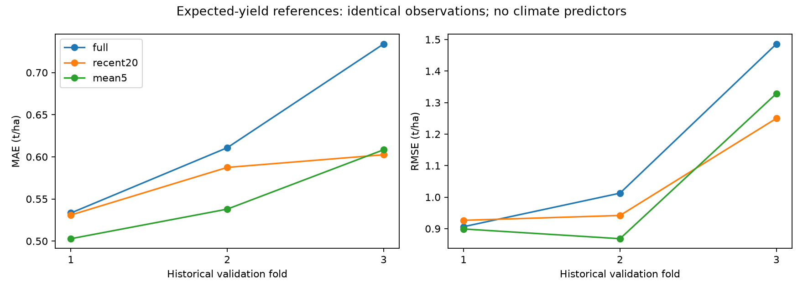
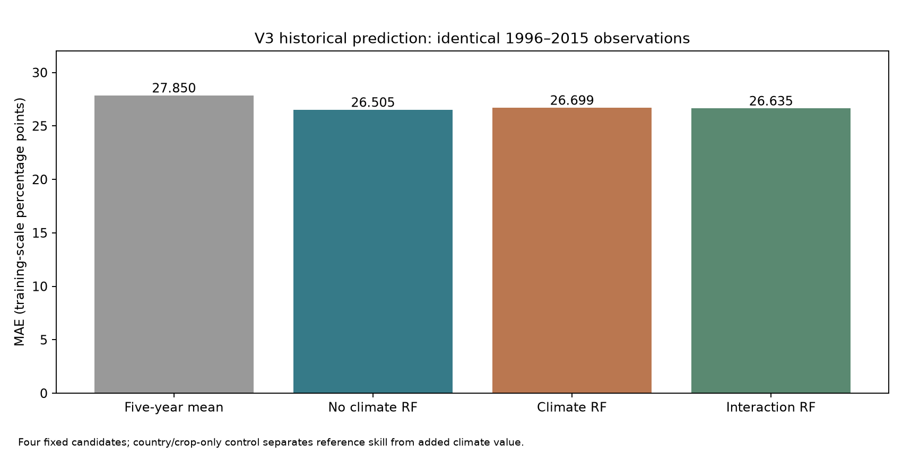
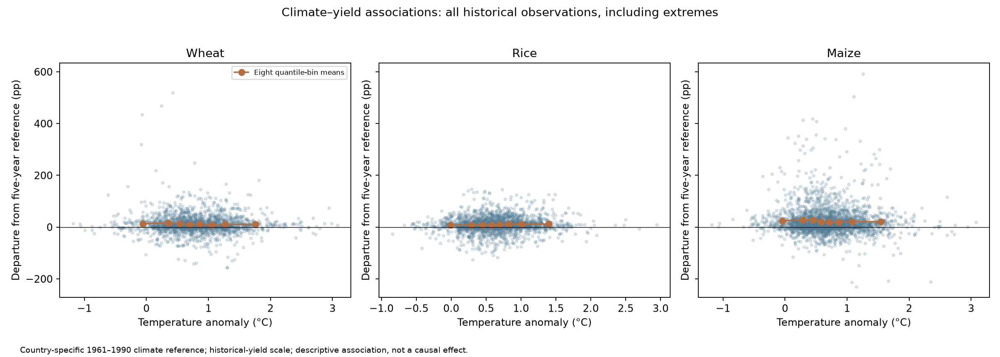
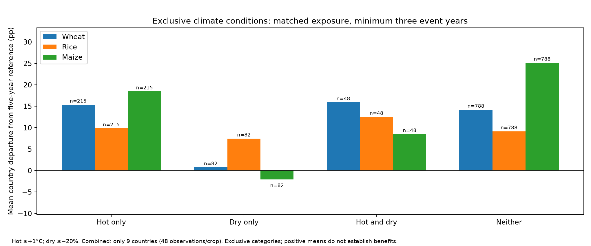
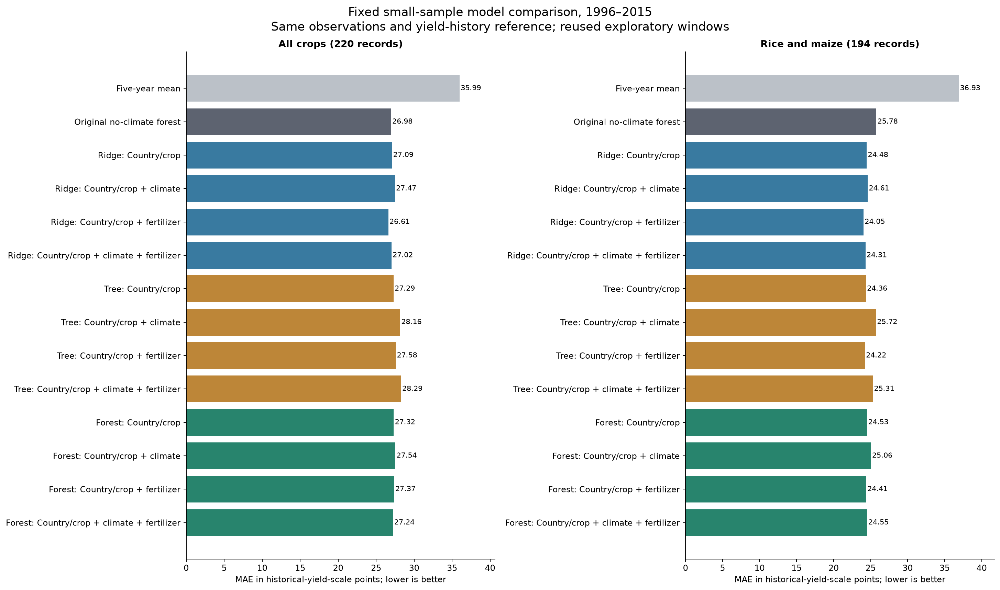
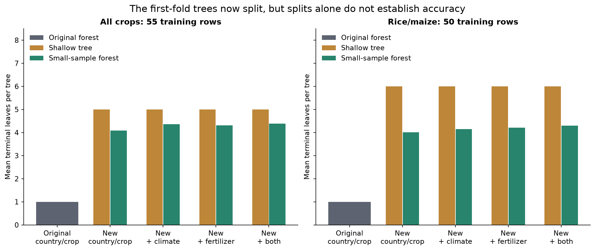
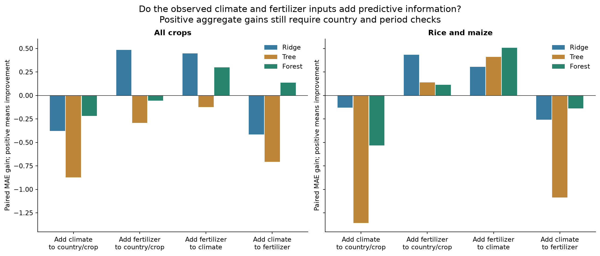

ICT324 / RESEARCH JOURNAL
Agriculture & Climate Resilience
Understanding crops
in a changing climate.
Exploring the relationship between temperature, rainfall and agricultural productivity through data mining.
RESEARCH QUESTIONHow do unusually high temperatures and low rainfall relate to crop yield variability, and which selected crops exhibit the greatest yield stability?
ICT324 — Introduction to Data Warehousing and Data Mining
Evidence reviewed
THE STUDY AT A GLANCEGlobal dataset · regional case study
Main coverage excludes the isolated 2025 US maize record, which is outside model evaluation. · Regional case study: 5 countries.
RESEARCH AT A GLANCE
What did our research find?
Four takeaways from the global experiments and Southeast Asian case study. Explore the underlying evidence for context.
Rice showed less variability.
Rice varied less numerically overall in the matched sample, but the difference from wheat is uncertain.
Compare crop stability →Climate inputs did not consistently add skill.
Annual temperature and rainfall did not reliably improve predictions beyond matched no-climate models.
Explore model results →Regional gains were mixed.
Fertilizer improved some regional comparisons, with gains depending on country and period.
Read the case study →Better inputs are needed.
Growing-season weather and agricultural management data could help address limitations.
See future work →Interpret carefully: These historical findings do not establish causal effects or a universal crop resilience ranking.
Read the discussion →EXPLORE THE EVIDENCE
The research, at a glance.
Interactive views of existing saved results, not new model experiments.
GLOBAL V3 · HISTORICAL EVIDENCE
1996–2015 validationGlobal Agriculture & Climate Explorer
See how productivity, climate anomalies and model errors differ across the study's countries.
Stability combines matched years, not one year.
Selected boundary No observation / unmapped
Loading historical evidence…
Historical yield trend
Observed yield only · available validation years, 1996–2015. Missing years break the line.
Loading evidence…
Compare two countries
Loading evidence…
Descriptive comparison, not a causal or significance test.
Sources: saved Global V3 validation predictions, analysis records and matched stability table; upstream crop sources FAO and other providers via Our World in Data, climate: contains modified Copernicus Climate Change Service information (2026). Natural Earth generalized boundaries; small territories may only appear in the selector. Historical associations are not causal effects. Data sources and limitations.
Crop stability comparison
Mean country SD · matched sample of 61 countries. Historical-scale points; lower is less variable.
Rice–wheat difference remains uncertain. Historical stability does not establish universal climate resilience.
Read the full stability analysis →V3 model comparison
Identical validation sample · historical-scale points (except R²).
See the detailed experiments →Our methodology: CRISP-DM
Six phases from research question to communication.
Explore full methodology →Our research journey
INTERACTIVE EXPLORER
Explore the evidence yourself.
Choose a country, crop, historical year and model. Compare observed yields, saved predictions and errors on an identical observation.
Open model demonstration ↗Saved historical validation predictions, not live future forecasts.
THE PEOPLE BEHIND THE RESEARCH
Team Members.
Three members working together on Agriculture & Climate Resilience.
Explore detailed research
Proposed responsibility assignments. These should be reviewed by the team before publication.
Choni Rangdol
Team Leader & Machine Learning Developer
Proposed responsibilities
Project coordination, Python programming, dataset integration, machine learning, model evaluation and technical documentation.
Sonam Choki
Data Research & Analysis Specialist
Proposed responsibilities
Dataset research, data quality assessment, exploratory data analysis, visualization and interpretation.
Rinchen Wangmo
Research Documentation & Presentation Coordinator
Proposed responsibilities
Literature review, academic documentation, CRISP-DM reporting, website content and presentation preparation.
01 / THE RESEARCHBetter questions.
Better questions.
Careful answers.
A global study of wheat, rice and maize, with mainland Southeast Asia as a secondary case study.
Explore detailed research
Reliable yields matter. So does knowing what our data can actually tell us.
Temperature and water availability are relevant to crop development. We investigate how unusually warm and dry years relate to yield variation, without assuming that every such year causes a decline.
We compare predictive models against simple baselines, examine climate–yield associations, and compare crop variability on matched country-years. A multi-country perspective helps us avoid treating one national pattern as a global rule.
We report weak results too. This is a research journal, not an operational forecasting service.
Research summary in more detail
A stronger baseline matters.
Recent yield history improved historical benchmarks. Annual climate inputs did not consistently add skill beyond matched no-climate models.
Global model evidence →Rankings need uncertainty.
Rice varied less numerically overall. Rice–wheat separation and combined heat/dry rankings remain uncertain.
Matched crop comparison →More inputs do not guarantee skill.
Smaller models helped some rice/maize comparisons. Fertilizer gains depended on country and period.
Regional evidence →02 / DATA & SOURCES
A verified starting point.
Downloaded observations, preserved metadata and explicit coverage limits. Open a count or source card for context.
Explore detailed research
Global crop coverage after the climate join
| Crop | Records | Countries & territories | Observed years |
|---|
Coverage is uneven. The only 2025 crop record is US maize, outside model evaluation. A year range does not imply that every country has every year.
YieldTonnes per hectare (t/ha)
TemperatureAnnual 2-m air temperature, °C
PrecipitationAnnual rain + snow water equivalent, mm
Downloaded source library
Our World in Data processes and distributes these exports. FAO and supplemental crop sources, and ERA5/Copernicus climate estimates, are the upstream providers. We did not extract ERA5 grids ourselves.
03 / DATA PREPARATION
From source to study.
Keep source-table rows, crop records and national country-years distinct.
- 67,299Raw source rows
Across five crop and weather tables; not unique crop observations.
- 23,412Clean crop records
Weather separately forms 12,545 unique country-years.
- ISO3 + yearValidated join
Many crop rows match one weather record, without row multiplication.
- 22,660Complete-weather panel
752 unmatched crop rows remain in an exclusion audit.
Explore detailed research
COMPLETE-CASE MATCHING
Preserve measurements. Explain exclusions.
23,412 cleaned crop records were considered. Complete climate was unavailable for 752, leaving 22,660 records.
The complete preparation and model-ready workflow
1. Preserve downloads
Save CSVs, metadata, retrieval dates and hashes.
2. Inspect schemas
Check measurement columns, types, units, missing values and duplicates.
3. Standardize keys
Use current ISO3 codes, integer years and explicit crop labels. Do not guess historical-country mappings.
4. Validate values
Require finite plausible values. Retain genuine zeros and flagged outliers; do not replace missing values with zero.
5. Align country and year
Join unique climate keys, then integrate crop rows many-to-one.
6. Audit incomplete joins
Log exclusions and verify unique country/year/crop keys and raw-value lineage.
7. Temperature anomalies
Subtract each country's 1961–1990 mean, with at least 20 reference values. Later models also standardize by its SD.
8. Precipitation anomalies
Calculate percentage departure from the same historical precipitation reference.
9. Expected yield
Compare an earlier full-history line, recent 20-year line and five-year mean.
10. Shared targets
Keep M3 conventional anomalies separate from later historical-scale deviations.
11. Chronology
Fit references, scalers and encoders on permitted earlier data only. Freeze references within validation blocks.
12. Model-ready records
Save eligibility and exclusions; use identical observations within every feature comparison.
What was verified
- No duplicate final keys or unexpected join multiplication.
- All 67,980 retained measurement cells trace to saved raw records.
- Statistically flagged outliers remain in the data.
What clean joins cannot solve
- Annual climate may not match crop-growing seasons or locations.
- National inputs repeat across crops.
- Unequal coverage, source revisions and upstream measurement uncertainty remain.
04 / CRISP-DM
A method, step by step.
Six phases connect the question to the evidence. Evaluation includes explaining why a model did not improve.
Explore detailed research
GitHub Pages communicates our research. It does not run a forecasting backend or a yield-prediction API.
05 / ORIGINAL MILESTONE 3
Start with an honest baseline.
The original final-test results are preserved, including negative R².
Explore detailed research
Training1961–2015 · 18,914 eligible rowsOriginal test2016–2024 · 3,370 eligible rowsInputsCountry, crop and annual climate anomalies
Understanding our models and prediction target
What the models do
A zero-anomaly baseline predicts the yield trend. Linear Regression fits a weighted linear relationship. A Decision Tree splits records into groups; a Random Forest averages trees. Later regional Ridge Regression uses a penalty to stabilize a small, correlated design.
What we predict
M3 uses 100 × (yield − expected) / expected, with a country/crop trend fitted on earlier data and expected yield above 0.1 t/ha. Errors are conventional yield-anomaly percentage points.
Linear Regression
Estimates a linear relationship between inputs and yield deviations.
Decision Tree
Uses decision rules to split observations into groups.
Random Forest
Averages many decision trees to estimate yield deviations.
MAEAverage absolute error. Lower is better.
RMSEPenalizes large misses more. Lower is better.
R²Compares squared error with observed variation around the evaluation mean. It can be negative.
Regression uses error measures, not classification accuracy. R² is not the percentage of predictions that are correct.
How the scores and original model selection work
For observed target y, predicted target ŷ and n evaluated records: MAE = sum(|y − ŷ|) / n; RMSE = sqrt(sum((y − ŷ)²) / n); R² = 1 − sum((y − ŷ)²) / sum((y − mean(y))²). The evaluation mean in R² is a mathematical comparison, not a predictor fitted using future outcomes. R² is undefined when the evaluated outcome has no variation.
Original tuning used expanding historical windows: train through 1995, 2002 and 2009; validate on 1996–2002, 2003–2009 and 2010–2015. Observation-weighted validation MAE selected Linear Regression. Numeric scaling and country/crop encoding were fitted within training data. The selected models were refitted through 2015 before the original one-time 2016–2024 evaluation.
The saved M3 settings are tree depth 3 / minimum leaf 40; Random Forest 100 trees / depth 6 / minimum leaf 20 / max_features 0.8 / seed 324. These are distinct from the later 80-tree V2/V3 and regional experiments. M3 numeric inputs were temperature departure in °C and precipitation percentage departure, alongside country/crop categories.

06 / GLOBAL V2 & V3Improve the comparison,
Improve the comparison,
not just the score.
Better yield references and fairer calibration changed how we evaluated the evidence.
Explore detailed research
Why we changed our reference and evaluation scale
Why improve the method?
A long yield line can miss changing growth and produce tiny expected values. V2 compared full-history, recent 20-year and previous-five-year references on identical eligible observations. No difficult measurement was removed to improve primary scores.
A common scale and earlier references
V2/V3 evaluate 100 × (yield − earlier full-history trend) / S, with S = max(0.5 t/ha, earlier median yield). Forward calibration fits every reference before its outcome block; preprocessing uses calibration data only.
Validation periods1996–2002 · 2003–2009 · 2010–2015Same eligible observations6,331 records · 142 countries/territories in the unionV3 referenceEarlier five-year mean, frozen within each block
V2: compare the expected-yield references first
The same 6,331 historical records support all three references. Full-history and recent-20-year lines extrapolate earlier trends; the five-year reference averages observed yields from the previous five calendar years. All are frozen at each validation block’s start. The five-year reference has the lowest primary MAE here.
V2 fixed features, settings and denominator safeguards
The 33 candidates comprise three references, three median-residual corrections and 27 Linear Regression / Decision Tree / Random Forest configurations. Every algorithm/reference compares country/crop categories alone, plus basic climate, and plus nonlinear climate. Basic climate uses temperature departure standardized by its 1961–1990 sample SD and precipitation percentage departure. Nonlinear versions add squares, hot–dry and crop–climate interactions.
Fixed settings were tree depth 4 / minimum leaf 30; forest 80 trees / depth 6 / minimum leaf 20 / max_features 0.8 / seed 324. Training-only scaling/encoding and forward calibration reduce target-fitting leakage. Unknown country categories and limited early calibration support remain limitations.
The primary historical scale preserves all 6,331 observations. A secondary conventional-percentage view requires full-history expectation above 0.1 t/ha and has 6,326 common observations. Five tiny denominators remain in the primary audit. Recent-20-year lines produced 14 nonpositive expectations. Genuine measurements were retained; no missing input was invented and no prediction was silently clipped. Five-year means can lag yield growth, so methodological improvement does not establish advance-forecast reliability.

V3: paired model evidence and research-question analysis
V2 compared 33 fixed reference/model approaches. V3 retained four prediction approaches and added explicit paired comparisons, adjusted associations and matched stability analysis. Its selected predictions reproduce V2 on the same rows; that is reproducibility, not independent confirmation.
Main result: the no-climate country/crop forest correction has the lowest overall MAE here. Climate and interaction inputs do not consistently improve it. Some crop/period results improve, but aggregate paired climate gains are negative.

07 / TEMPERATURE & RAINFALL
Associations, with context.
Weak annual national relationships do not establish that climate is irrelevant to agriculture.
Explore detailed research
Temperature anomalies are departures from a country's 1961–1990 mean. Precipitation anomalies express percentage departure from its rain-and-snow reference. Pearson correlation describes a linear relationship; Spearman correlation compares ranks for a monotonic pattern. Neither shows causation.


Adjusted coefficients and uncertainty intervals
Each crop’s regression controls for country and calendar year. The coefficient describes a conditional association with five-year-centred, historical-scale yield deviation. The interaction is temperature departure multiplied by precipitation departure per 10 percentage points; main slopes refer to the other departure being zero. Intervals below cluster by country; separate year-cluster sensitivities also include zero. These are separate dependence checks, not a joint country-and-time model, and do not adjust for multiple comparisons.
08 / CROP YIELD STABILITY
Compare like with like.
Compare all three crops on the same country-years, with equal weight for each country.
Explore detailed research
Matched panel61 countries · 1,219 country-years per cropPrimary variability measureCountry sample SD, then equal-country averageYield centreEarlier five-year mean, common historical scale
Lower standard deviation indicates less overall historical variability under this measure. Rice is numerically lowest. The paired wheat-minus-rice interval spans −1.75 to +11.94 points and includes zero, so their separation remains uncertain. Downside measures need not share the same ordering.

The rice-minus-maize interval is −21.8989 to −5.3558 historical-scale points, below zero in this matched sample. This gives stronger support for lower rice variability than the rice–wheat comparison. It remains an approximate, unadjusted descriptive result under the specified reference and metric.
Paired differences in overall crop variability
Negative differences mean the first crop has lower mean country SD. Country resampling captures one form of uncertainty; these intervals do not establish a biological resilience mechanism or universal crop ranking.
Hot, dry and combined years
Hot means temperature departure ≥+1°C; dry means precipitation departure ≤−20%, relative to 1961–1990. These are declared annual proxies, not verified biological injury thresholds. Hot-only, dry-only, combined and neither are non-overlapping groups.
Combined events are sparse.
Only nine countries have at least three combined years, supplying 48 event observations per crop. Requiring five years leaves three countries and can change the numerical ranking.
Resilience cannot be ranked reliably.
A stricter +1.5°C / −30% definition leaves no country with three combined years. We cannot call rice universally resistant to climate change.

09 / SECONDARY CASE STUDY
A Southeast Asian perspective.
Thailand, Myanmar, Cambodia, Laos and Vietnam. The global research question stays primary.
Does fertilizer improve predictions?
Country/crop-specific scores calculated from the existing 194 rice/maize validation observations (97 country-years). Raw MAE in t/ha; not the normalized MAE in the detailed tables.
Loading regional evidence…
Same selected records for both Ridge variants. Fertilizer is national context; this is not a causal effect or an independent test. Wheat is not included in this explorer.
Explore detailed research
Could real agricultural management context help explain what annual climate models miss? We investigated source availability before fitting separate regional models.
Original crop rows preserved
635 through 2015 and 108 later. Missing inputs stay explicit after many-to-one country/year left joins.
Fertilizer country-years
Observed fertilizer matches 611 of 635 historical crop rows. It is national cropland context, not crop application.
Historical irrigation years
All are in Laos. The full selected export has only 18 country-years, so irrigation is excluded from models.
Rice and maize each have 64 years per country, 1961–2024. Wheat has 64 Myanmar years and 39 Thai years, 1986–2024, with no records for the other countries. No wheat was manufactured.
One shared historical design
Use the three global validation periods through 2015 and the V3 target/reference definitions. Every feature comparison shares identical observed-fertilizer rows: 220 all-crop or 194 separately fitted rice/maize validation records, both representing only 97 national country-years. Wheat validation is limited to 20 Myanmar and six later Thailand records.
Both regional tables use this cohort. Do not directly rank them against global evaluations.
First experiment: established forest settings
The 80-tree forest used depth 6 and minimum leaf 20. Fertilizer did not improve aggregate MAE. With just 50 early rice/maize calibration rows, all 80 trees were stumps: one leaf, with no feature-specific splits.
Next: a fixed small-sample comparison
Before fitting, we fixed Ridge α=10, a depth-3 tree with at least five rows per leaf, and an 80-tree depth-3 forest with the same leaf minimum. Each tested country/crop, climate, fertilizer and both input sets, using training-only scaling/encoding. There was no large parameter search.
All 14 fixed candidates for the selected cohort



10 / FINDINGS & DISCUSSIONThree questions.
Three questions.
Different evidence.
Prediction, association and stability are related research questions, not interchangeable results.
Explore detailed research
Predictive models
Recent yield history and appropriate baselines matter. Climate adds no consistent global skill; some smaller regional models help rice/maize, while fertilizer gains remain concentrated.
Statistical associations
Weak correlations and uncertain adjusted intervals describe coarse annual proxies. They do not establish that weather has no agricultural effect.
Historical stability
Rice is numerically less variable overall in the matched sample. Uncertainty and sparse combined events prevent a universal resilience ranking.
For agricultural planning, these results support obtaining better crop-season and management measurements before making decisions. They do not support prescribing fertilizer rates, selecting a universally resilient crop or relying on these models before harvest.
11 / CHALLENGES & RESPONSES
Learn from the limits.
What happened, why it mattered, what we did and what remains unresolved.
Explore detailed research
Incomplete observations and unequal coverage
Problem: crop/weather/input coverage differs, which can make comparisons unfair. Response: audit exclusions, validate joins and match eligible observations. Remaining limit: complete-case selection and narrow wheat support restrict generalization.
Small denominators and yield-trend extrapolation
Problem: tiny expected yields amplify percentage anomalies, and a long line can miss growth changes. Response: preserve measurements, compare references and use a common historical scale. Remaining limit: reference/scale choices matter and recent means can lag growth.
Poor prediction and data leakage concerns
Problem: negative original test R² and differences between fitted historical residuals and future extrapolation errors. Response: diagnose errors, calibrate references forward and fit preprocessing only on training data. Remaining limit: later historical gains lack fresh independent confirmation.
API failures and sparse irrigation
Problem: direct World Bank requests failed and FAOSTAT required authentication. Response: preserve logs, use documented public OWID exports and verify actual coverage. Remaining limit: irrigation is still too sparse; no missing years were fabricated.
Regional stumps and overfitting concerns
Problem: restrictive global settings prevented early regional splits. Response: fix smaller models before fitting and inspect actual leaves and paired errors. Remaining limit: more capacity may fit noise, and some wheat/country results worsen.
Sparse combined events and annual resolution
Problem: few countries have enough hot/dry years; annual weather misses crop seasons. Response: report support, exclusive categories, matched-country uncertainty and sensitivities. Remaining limit: no reliable combined-stress ranking or causal exposure estimate.
Revised inputs and reused validation windows
Problem: current snapshots revise history, and validation periods have been examined repeatedly. Response: preserve vintages, freeze protocols and label exploratory results. Remaining limit: publication timing and independent evidence are needed before forecasting claims.
12 / RESEARCH JOURNAL
A record of the work.
Recorded activity dates, without inventing submission or lecturer acceptance.
Explore detailed research
Topic & proposal
Research direction is recorded. Formal proposal submission and lecturer acceptance were not found.
Data & website
Data and website files are present. Earlier launch dates are locally recorded; official acceptance is not verified.
Analysis & evaluation
Cleaning, baselines, model comparisons and verification completed locally, followed by global/regional experiments.
Paper & presentation
In preparation. Official rubric, template and deadline need confirmation; no submission is claimed.
13 / FUTURE WORK
The next useful questions.
Proposed work, not completed experiments.
Explore detailed research
Improve the evidence.
- Crop-specific growing-season temperature and rainfall.
- Verified crop-growing geography with appropriate historical vintages.
- Independent validation and a defined prediction date.
- Historical release timing and better management measurements.
- More supported joint heat/dry analysis and carefully justified, prespecified models.
Finish the communication.
Keep the global study central in the paper, with the regional work as a sensitivity case. Select compatible figures, verify licences/citations and prepare the presentation and code explanation.
The goal is defensible research—not repeatedly tuning the same years until R² becomes positive.
READING GUIDE
Research glossary.
Plain-English explanations of the terms used throughout our research.
14 / CODE, DATA & REFERENCES
Follow the evidence.
Provider links, project-owned derived results and readable documentation.
Versioned research evidence
Use the artifact guide for exact V1/M3, V2 and V3 source, settings, result and report paths. A repository link alone does not establish access to raw data or model files.
Open research artifacts →Explore the repository ↗Read the evidence guide
Definitions, sample sizes, result provenance, source credits and scientific limits, without personal laptop paths or raw-data downloads.
Open the evidence guide →Download derived comparison tables (CSV)Original data sources
Provider links, metadata and licence evidence.
Browse source library →Processed dataset
Full dataset publication is subject to source licences.
Access not confirmedPython source code
Versioned cleaning, training and evaluation paths.
View artifact guide →Research paper
Final academic report.
In preparationPresentation
Final project presentation.
In preparationGitHub
Existing team repository and publication history.
Open repository ↗Source credits are on the source cards above. Climate: modified Copernicus Climate Change Service information, processed by OWID. Crop yield: FAO and the supplemental providers named by OWID. Fertilizer: FAO → OWID. Irrigation: FAO → World Bank → OWID. Correct data handling does not independently certify each upstream estimate.
The ICT324 requirements specify a conference-style paper, presentation, code and dataset submission. Final submission compliance has not been verified. The paper and presentation remain in preparation.